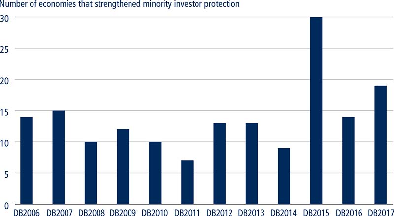
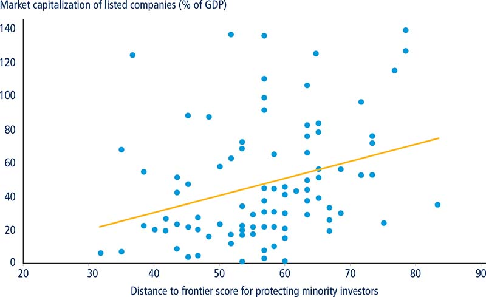
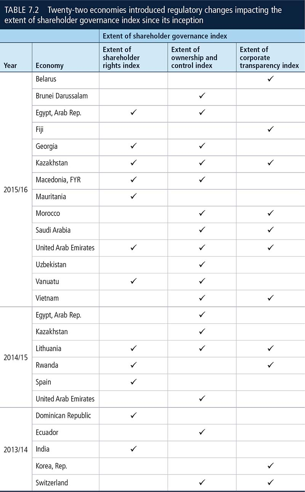
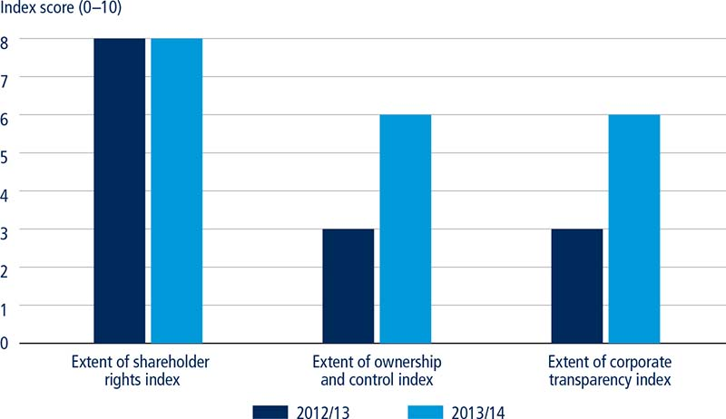
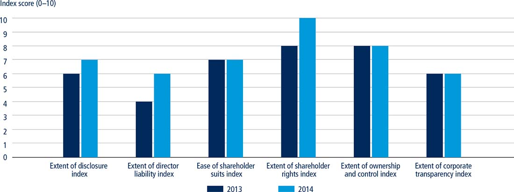

Investment is key to private sector development. Yet business risk, political risk and other exogenous factors can turn a seemingly well-calculated investment decision into a loss. The one factor, however, that can be mitigated through adequate regulation is legal risk.1 Doing Business, through the protecting minority investors indicator set, measures aspects such as the protection of shareholders against directors’ misuse of corporate assets for personal gain and the rights and role of shareholders in corporate governance.
When it comes to private sector and capital market development, shareholder protection and empowerment are increasingly elevated to policy goals—even more so following the 2008 global financial crisis.2 Policy makers around the world are implementing reforms aimed at increasing the involvement of minority shareholders in corporate decisions. In fact, Doing Business has recorded and documented 166 reforms to aspects of corporate governance in 100 economies since 2005 (figure 7.1).3
FIGURE 7.1 Protecting minority investors reforms over time

Source: Doing Business database.
Note: The number for Doing Business 2015 includes an amendment to the OHADA (Organization for the Harmonization of Business Law in Africa) Uniform Act on companies, which is applicable in its 17 member states.
▪ Doing Business has recorded and documented 166 reforms to aspects of corporate governance in 100 economies since 2005.
▪ Since 2013, 54 economies introduced 63 legislative changes strengthening minority shareholder protections: 38 on the extent of conflict of interest regulation index, 17 on the extent of shareholder governance index and eight on both.
▪ Doing Business data confirm the positive relationship between greater protection of minority shareholders on the one hand and capital market development and access to equity finance on the other.
▪ India carried out an ambitious, multi-year overhaul of its Companies Act, bringing Indian companies in line with global standards—particularly regarding accountability and corporate governance practices—while ensuring that businesses contribute more to shared prosperity through a quantified and legislated corporate social responsibility requirement.
▪ When tackling what they referred to as “excessive remuneration in publicly listed companies” Swiss lawmakers opted for a comprehensive reform that also regulated the election and term of board members, their organization in subcommittees and their reporting obligations.
The legal implications of shareholder empowerment have been studied extensively.4 The literature has been scarcer, however, on the effect of shareholder empowerment on economic indicators, such as firm value, profitability, cost of capital, or capital market size.5 One of the objectives of Doing Business is to provide standardized, comparable measurements on the adoption of corporate governance practices across 190 economies that can be tested against economic indicators. Using Doing Business data and existing literature, this case study presents empirical evidence on the economic benefits of corporate governance practices that promote shareholder protection and empowerment. The study also contributes to defining the concept of sound corporate governance.
Sound corporate governance is the optimal balance between controlling shareholders, minority shareholders, company managers and market regulators. Many studies provide evidence that achieving sound corporate governance promotes economic development through higher returns on equity, efficiency of investment allocation, firm performance and valuation, lower cost of capital and easier access to external financing.6
That growing attention is being devoted to corporate governance is neither new nor surprising. Today the Organisation for Economic Co-operation and Development (OECD) principles of corporate governance,7 originally developed in 1999 and last updated in 2015, constitute a cornerstone. The American Law Institute, whose corporate governance project was formally initiated in 19788 and materialized into principles in 1992,9 is another foundational reference.
Introducing corporate governance principles—as opposed to giving each company complete discretion in determining its internal rules—guarantees a minimum standard through which companies must be directed and controlled.10 When these rules are violated these principles also provide shareholders with judicial recourse.11 Investors become more willing to finance the business ventures of others without exerting direct control over the affairs of the company.12 As a result, entrepreneurs can tap into broader sources of financing. With easier access to capital, companies are more likely to grow, generate tax revenues and create jobs.13
The benefits extend beyond greater access to finance. Corporate governance also contributes to value maximization throughout the life of a company.14 Properly executed, it ensures that companies are run in the best interest of their owners.15 Executives and managers are given authority to do so efficiently, with sufficient discretion to apply their skills and business acumen.16 Internal structures and processes are clearly laid out.17 The risk of mismanagement and abuse is mitigated thanks to increased accountability, predictability and transparency.
The aggregate effect of all companies following sound corporate governance promises significant positive outcomes for the economy overall. Research shows how sound corporate governance can lead to higher returns on equity and greater efficiency.18 In deciding the rules and practices that individual companies must follow, legal scholars and legislators have traditionally relied on concepts such as legal certainty,19 predictability, equity and enforceability. To empirically assess the relevance of these concepts to the overall performance of an economy, scholars increasingly started to use quantitative analysis tools. The so-called law and economics approach, and its subsequent branching into law and finance, have become an integral part of modern policymaking.20
The protecting minority investors dataset provides data for 38 aspects of corporate governance in 190 economies, grouped into two sets of three indices each (table 7.1).
TABLE 7.1 Indicators of minority investor protection
Extent of conflict of interest regulation index |
Extent of disclosure index Extent of director liability index Ease of shareholder suits index |
Measured since 2004 |
Extent of shareholder governance index |
Extent of shareholder rights index Extent of ownership and control index Extent of corporate transparency index |
Measured since 2014 |
The first set of indices focuses on the regulation of conflicts of interest, specifically self-dealing in the context of related-party transactions. A related-party transaction refers to a case where a person has an economic or personal interest in both parties to the transaction. A company executive entering into a supply contract with another company that is wholly owned by his or her spouse is an example of a related-party transaction. Although related-party transactions are not inherently harmful, they are more likely to result in self-dealing—a type of abuse—and therefore require specific regulation. Self-dealing consists of benefiting oneself while under the duty to serve the interests of someone else. In this example, self-dealing would occur if the supply contract were priced above market so as to benefit the spouse at the expense of the company’s owners. Unsurprisingly, research shows that protecting against self-dealing is positively associated with capital market development.21
The second set of indices provide a more general view of corporate governance practices, ranging from shareholder rights, protection from share dilution, ownership structure and control of the company to managerial compensation and audit transparency. They are derived from recent comparative law and economics research that has analyzed these practices separately in detail, some of which are described hereafter.22
Overall, these two sets of indices present a positive correlation with stock market development as measured by market capitalization as a percentage of GDP (figure 7.2).23 Doing Business data confirm the existing research on the positive relationship between greater protection of minority shareholders, capital market development and access to equity finance.24 Subsequent sections provide more evidence from recent research regarding the effects of various corporate governance practices on economic indicators.
FIGURE 7.2 Stronger minority investor protection is associated with greater market capitalization

Sources: Doing Business database; Bloomberg; World Federation of Exchanges database.
Note: The correlation between market capitalization as a percentage of GDP and the distance to frontier score for protecting minority investors is 0.23. The relationship is significant at the 5% level after controlling for income per capita. The sample includes 91 economies for which data on market capitalization are available for the past 5 years.
Since 2013, 54 economies introduced 63 legislative changes strengthening minority shareholder protections. Twenty-two of these economies did so by introducing practices and requirements measured by the extent of shareholder governance index introduced in Doing Business 2015 (table 7.2). These economies have used a variety of different legislative approaches to strengthen their minority shareholder protections. As part of an ambitious multi-year overhaul of its Companies Act, for example, India enhanced corporate governance by affirming the right of shareholders of privately held companies to approve the issuance of new shares and their priority thereon. The new version of the Companies Act was enacted in 2013 and its provisions progressively entered into force over the following two years.
TABLE 7.2 Twenty-two economies introduced regulatory changes impacting the extent of shareholder governance index since its inception

Source: Doing Business database.
While India chose to reform the legal foundation applicable to all companies (its Companies Act), the Dominican Republic chose a different approach, focusing instead on companies that offer securities to the public. Among the changes introduced in 2013 to its Regulations of the Securities Market Law, it granted minority shareholders the right to request an extraordinary meeting and required an external audit of the financial statements of listed companies.
Ecuador and Kazakhstan elected to introduce one piece of legislation containing amendments to several other legislative instruments. Ecuador’s 2014 Law to Strengthen and Optimize the Corporate Sector and the Stock Market, for example, introduced changes to the Securities Market Law, the Commercial Code, the Company Law, the General Law of Financial Institutions and the Code of Civil Procedure, among others. The new law also guarantees a way out for minority shareholders when their company changes hands: if a new investor acquires a majority, he or she must make an offer to purchase the shares of all remaining shareholders. Although Swiss lawmakers had one specific area in mind—excessive remuneration in publicly listed companies—when they issued a federal ordinance in 2013, to tackle the problem effectively they chose a comprehensive response. The result was an ordinance that also regulated the election and term of board members, their organization in subcommittees and their reporting obligations. Similar objectives led the Republic of Korea to enact the Financial Investment Business and Capital Markets Act in 2013. One of its features is the requirement that listed corporations disclose the remuneration of chief officers on an individual basis.
Different rulemaking approaches—whether a series of targeted amendments or a one-time complete revision of a code—aimed at different aspects of corporate governance—such as increasing minority shareholder rights or regulating directors and majority shareholders—contribute to better corporate governance practices. Because Doing Business captures outcomes on legal equivalents, these different approaches have a similar impact on its indicators. In other words, to ensure a positive impact on their economy, rather than on benchmarking exercises, policy makers should introduce sounder corporate governance practices in a manner that is consistent with their legal system and tradition. In doing so, policy makers should ensure that different company forms exist, each with different levels of regulatory requirements. Sound corporate governance adapts the compliance burden to company size and revenue. It contributes to creating a “regulatory pyramid,” in which companies at the top in terms of market size, turnover, cash flow and systemic importance are also at the top of the regulatory requirements.
How would a typical business owner react if employees could set their own salaries and not necessarily inform the owner what amount they have decided to pay themselves? This is essentially how companies in many economies determine the remuneration of board members and senior executives vis-à-vis shareholders. In 2014 Switzerland decided that a different model was necessary and enacted an ordinance introducing checks and balances on senior executive compensation.25 Its purpose was to address concerns both from the public at large and for firm performance.26 The Swiss experience is an example of public opinion-induced corporate governance reform following the 2008 global financial crisis.27 The first step occurred on March 3, 2013, when the Swiss voted in favor of a public consultation initiative best translated as “against remuneration rip-off.” It passed with 68% of the votes.28 The Federal Council—the seven-member head of the Swiss government—then drafted a regulation reflecting the consultation’s outcome. The Federal Council’s ordinance was published on November 20, 2013, and the new requirements entered into force on January 1, 2014.29
A closer look at the legal instruments used by Swiss policy makers illustrates how sound corporate governance improves outcomes. There are two primary mechanisms—disclosure and shareholder vote—through which the ordinance affects corporate governance and therefore firm behavior.30 The disclosure component requires the board of directors to issue a compensation report annually that shows all compensation awarded by the company, directly or indirectly, to members of the board of directors, the executive management and the advisory board.31 It also stipulates an annual disclosure to the public by annexing the compensation report to the financial statements.32 Items to be disclosed include fees, salaries, bonuses, profit sharing, services and benefits in kind. It must also be reviewed by an auditor.33
The policy objective of disclosure is to provide information that would not otherwise be obtainable and on which informed decisions can be made. In practice, however, shareholders rarely read all the information presented to them, be it before deciding to invest in a company or when participating in a general meeting. Thus the primary effect of disclosure is to guide the decisions made by insiders, knowing in advance that they will have to reveal the information later.
The beneficiary of the disclosure also matters. When the intended beneficiary is broad—that is, the public—the primary concern is the reputation and the image of the company. By contrast, where the disclosure is targeted—to the regulator or stock exchange authority—the concern is compliance. In this case, the goal is to be accurate and avoid sanctions by the authorities. These two options have practical policy implications: in particular cases, disclosure to the regulator is preferable. Complex financial and legal submissions, for example, are effective only if reviewed by experts. In other cases, companies should disclose to the public or shareholders at large rather than to the regulator. For regulatory agencies, the only concern would be that the figures are accurate and provide a complete picture of all benefits and incentives in accordance with applicable accounting standards. Shareholders, on the other hand, would decide on the somewhat subjective concept of excessive compensation. Switzerland, therefore, opted for public disclosure. The reform was captured in the 2015 edition of the Doing Business report (figure 7.3).
FIGURE 7.3 Switzerland strengthened shareholder governance as measured by Doing Business

Source: Doing Business database.
In addition to disclosure, Switzerland also mandated shareholder vote. The so-called “say on pay” mechanism of the ordinance applies to proposed compensation, which must be put to a vote and approved by the majority of shareholders to be valid. Unequivocally this results in increased shareholder control. But once again, and similar to disclosure, giving shareholders more say is a means rather than an end. The primary goal is to affect firm behavior. When company insiders know in advance that a decision will be subject to shareholder approval, this changes the nature and content of the decision itself.
Two years after the ordinance entered into force practitioners reported that all listed corporations had implemented the new rules without serious issues. So far, shareholders have approved all compensation proposals, which is unsurprising: firms have adjusted their behavior in anticipation to avoid disapproval.34
Asking shareholders more interesting questions—such as whether or not they agree with the remuneration of their directors and executives—reaps other benefits. For one, it increases the likelihood that shareholders will actively exercise their voting rights at general meetings. According to a survey of 107 investors, the exercise of voting rights in Switzerland increased from 62.9% to 86.1% after the ordinance passed. And 13.9% of investors who actively used their voting rights did so only on compensation.35 At the same time, vote outcomes have been mostly positive. Swiss companies continue to operate normally, managers have not found themselves hindered (contrary to initial concerns) and shareholders have been broadly supportive of the proposals put before them. What has changed following the empowerment of shareholders is the increase in accountability and the sense of having a say in major decisions. This has in turn generated trust and confidence, a crucial commodity for the Swiss Exchange or any other capital market.36
India’s experience was unique to that of Switzerland. But the goals—trust and economic growth—were similar. Rather than a popular initiative focused on managerial compensation—albeit a central issue with multiple ramifications—the government of India took on the task of completely overhauling its Companies Act, its primary set of rules governing how businesses are incorporated, owned, managed, rehabilitated or closed when insolvent, and challenged in court. The previous version dated from 1956.
Ambitious and comprehensive legislation takes time. India’s lawmaking process started in 200437 and was followed by years of drafting, redrafting and consultations on the bill. It was finally submitted to parliament in 2012 and passed by the upper house on August 8, 2013. It received the assent of the president shortly after, on August 29. The date of entry into force is less straightforward. India follows an unusual system whereby provisions are not applicable until the Ministry of Corporate Affairs notifies each section; notification typically happens in waves. The first took place in September 2013 with the notification of 98 sections followed by another series of notifications in April 2014. As of June 2016, 282 of the 470 total sections were notified and eight provisions of the 1956 Act remain applicable. Despite this piecemeal introduction, it has paid off both in economic terms and in India’s performance in Doing Business: India’s score increased in three of the six indices of the protecting minority investors indicator set (figure 7.4).38
FIGURE 7.4 India’s Companies Act 2013 made strides in three indices

Source: Doing Business database.
Four objectives guided the drafting of the reformed Companies Act. First, administrative requirements weighing on companies had to be simplified. Second, more transparency had to be instilled in their operations and decision-making structures. Third, the competitiveness of Indian firms had to be increased by bringing them in line with global standards, particularly regarding accountability and corporate governance practices. Lastly, it had to advance all of the above while ensuring that businesses contribute more to shared prosperity in an economy where demographics and income inequality pose stark challenges.
To simplify administrative requirements the minimum paid-in capital was abolished. To instill greater transparency the Act increased disclosure requirements, particularly regarding related-party transactions.39 To bring Indian firms in line with global standards the Act added requirements to disclose managerial compensation and to have one-third independent directors and at least one woman on the board.40 The fourth objective, however—contributing to greater shared prosperity—garnered the most attention by aspiring that all companies allocate 2% of their net profits to socially responsible projects. In effect, India became the first economy in the world with a quantified and legislated corporate social responsibility (CSR) requirement. However, it is enforceable on a “comply or explain” basis and goes beyond the scope of areas measured by Doing Business.41 In practice, this means that companies who fail to meet the target must simply state so in their annual report and provide a justification. The Act provides a statutory definition of CSR as activities relating to hunger and poverty eradication, education, women empowerment, and health and environmental sustainability, among others.42
Company regulation is an ongoing process. Since the enactment of the Companies Act, 2013, the Ministry of Corporate Affairs has issued clarifications, notifications and circulars on a regular basis to address ambiguities in the law. Most notably, two sets of amendments were released in August 2014 and in May 2015, highlighting the Indian government’s ongoing commitment to reform. On June 4, 2015, it set up a committee tasked with identifying and recommending further amendments to the Act and with centralizing recommendations and concerns from private sector stakeholders and regulatory agencies.43 The case of India serves as a reminder of the time it takes and the challenges inherent to a holistic legislative overhaul. Piecemeal fixes can be a time- and cost-effective approach, but only a full-fledged legislative reform gives policy makers the opportunity to innovate and sends a strong signal to the business community.
Achieving sound corporate governance is not a simple task. It is a specialized and technical area of regulation. Its impact is not as immediate as, for example, facilitating business incorporation or streamlining tax compliance. But thanks to the analytical tools provided by the law and economics approach, research shows that gains for the economy are tangible. At the outset, it increases investor confidence. With easier access to finance, companies can grow and, in so doing, pay more taxes and employ more workers. It is also shown to increase the returns on equity, efficiency of investment allocation and to decrease the cost of capital.
The growing body of research on achieving sound corporate governance is also having an impact. Lessons learned from other economies adopting these practices and constant new research—including those using Doing Business data—confirm their economic benefit. Although performance on this indicator set is very highly correlated with the stage of economic development, policy makers in developing economies now have a clearer path to introduce effective corporate governance and maximize the potential of their firms.
The majority of the 54 economies that made strides in minority investor protection in the past three years are the ones that have the furthest to go: 44 of them are low- or middle-income economies. To contribute to this effort, Doing Business has doubled the areas of corporate governance included in the protecting minority investors indicator set and expanded it to include regulatory frameworks that are relevant for small and medium-size enterprises. The immediate result is that more strengths, weaknesses and therefore potential improvements can be identified from its annual findings. In addition, researchers, lawyers and policy makers now have a more comprehensive baseline when working toward introducing sounder corporate governance practices.
This case study was written by Nadine Abi Chakra, Varun Eknath, Albina Gasanbekova and Hervé Kaddoura.
1. Legal risk refers to the risk of loss arising from insufficient, improperly applied or unfavorable legislation and the resulting lawsuits.
2. Mukwiri and Siems 2014; Dignam 2013; Reisberg 2013; Cheffins 2009.
3. A corporate governance reform is a legislative or regulatory change that increases the level of protection of minority investors as measured by the Doing Business protecting minority investors indicators. See the data notes for more details.
4. Katelouzou and Siems 2015.
5. Bebchuk 2005.
6. Asker and others 2015; Claessens 2006; Klapper and Love 2004; Kutan 2015.
7. OECD 2015.
8. Eisenberg 1993.
9. American Law Institute 1992.
10. The OECD summarizes corporate governance as a set of relationships between a company’s management, its board, its shareholders and other stakeholders. Corporate governance also provides the structure through which the objectives of the company are set, and the means of attaining those objectives and monitoring performance are determined.
11. For a discussion on the importance of effective enforcement see Okpara 2011.
12. Dyck and Zingales 2004; Holderness 2003; La Porta and others 2000; Shleifer and Vishny 1986.
13. Arora 2014; Rupeika-Apoga 2014.
14. Ammann and others 2011; Brown and Caylor 2009; Gompers and others 2003.
15. Bebchuk and others 1999.
16. Aggarwal and others 2009; Denis and Serrano 1996; Grossman and Hart 1982.
17. Bebchuk 2013.
18. Ates and others 2014; Lan and others 2015; Liljeblom and others 2015.
19. Legal certainty may be defined as the consistent application of a rule—the same facts invariably resulting in the same clear, definite and binding decisions.
20. Posner 1983; La Porta and others 1996.
21. Djankov and others 2008.
22. See “Going beyond related-party transactions” in Doing Business 2015. See also Black and others 2010; Cremers and Ferrell 2014; Dharmapala and Khanna 2013; McLean and others 2012; Lima and Zoratto 2013; Chen and others 2011; Malhotra and others 2013; Guo and Masulis 2013; Lang and others 2012; Martynova and Renneboog 2011.
23. The data for market capitalization as a percentage of GDP are from Bloomberg. The market capitalization figures are calculated from “all shares outstanding.” The data do not include exchange traded funds (ETFs) and American depository receipts (ADRs) as they do not directly represent companies. They include only actively traded, primary securities on national exchanges to avoid double counting. Therefore the values will be significantly lower than market capitalization values of an economy’s exchanges from other sources. Bloomberg standardizes the figures by dividing market capitalization by GDP to be able to make comparisons among economies. See also Pagano and Volpin 2006; Ali and Aamir 2014.
24. Dahya and others 2008.
25. Swiss Federal Justice and Police Department. 2013. “Initiative populaire ‘contre les rémunérations abusives’.” Press release, March 3. Available at http://www.ejpd.admin.ch/ejpd/fr/home/aktuell/abstimmungen/2013-03-03.html/.
26. Core and others 1999, for example, find that firms with weaker governance structures have greater agency problems, that CEOs at firms with greater agency problems receive greater compensation and that firms with greater agency problems perform worse.
27. Barthold and others 2014.
28. Swiss Federal Justice and Police Department 2013.
29. Roberts 2014.
30. The ordinance also contains other important features. Only the general meeting of shareholders can now elect the chairman of the board of directors and the members of the compensation committee. The establishment of a compensation committee became mandatory, and provisions on proxies and pension fund schemes were also introduced.
31. Disclosure of managerial compensation is one of the practices that are measured by the protecting minority investors indicator set. It was added when the methodology was expanded in 2014.
32. Article 13 of the ordinance against excessive compensation in listed companies and Articles 696 and 958e of the Swiss Federal Code of Obligations.
33. Articles 13-16 of the ordinance against excessive compensation in listed companies.
34. Daeniker and others 2014.
35. Swiss Proxy Advisor 2014.
36. Over the two-year period after the ordinance against excessive compensation in listed companies became effective, the Swiss Market Index rose by 6.6%.
37. Venkateshwaran 2013.
38. World Development Indicators database (http://data.worldbank.org/indicator), World Bank; Doing Business database.
39. Section 188, Indian Companies Act, 2013.
40. Section 149, Indian Companies Act, 2013.
41. Section 135, Indian Companies Act, 2013.
42. Schedule VII, Indian Companies Act, 2013.
43. India, Ministry of Corporate Affairs. 2016. Report of the Companies Law Committee. February. http://www.mca.gov.in/Ministry/pdf/Report_Companies_Law_Committee_01022016.pdf/.